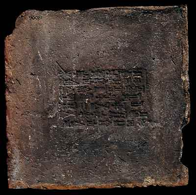

The Challenge -
Brick of Nebuchadnezzar II

Nebuchadnezzar (605-562 B.C.) was king of the Babylonian empire. He had new buildings constructed in many cities especially his capital of Babylon. Bricks were stamped with his name and titles.
To learn more about bricks visit the Ziggurat Explore.
|
|